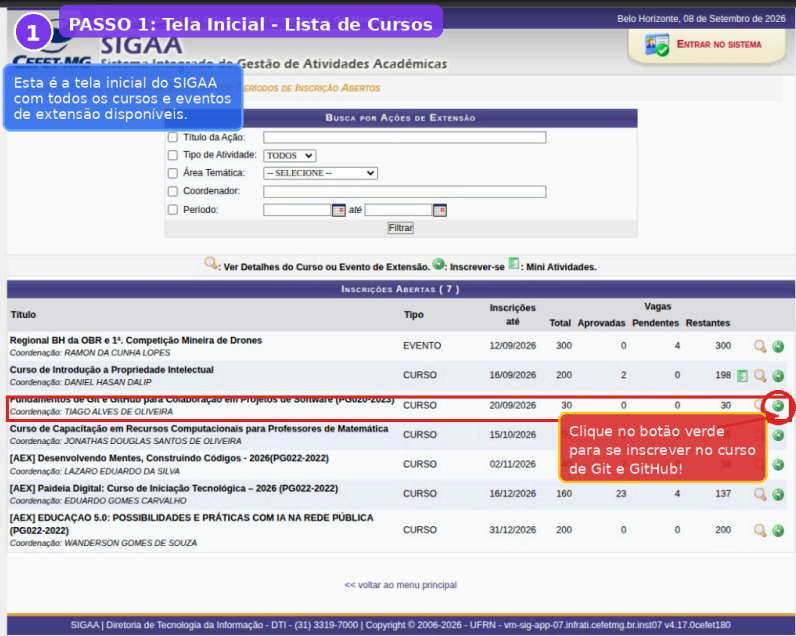
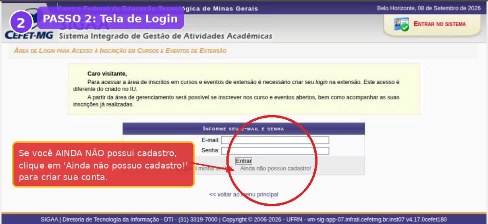
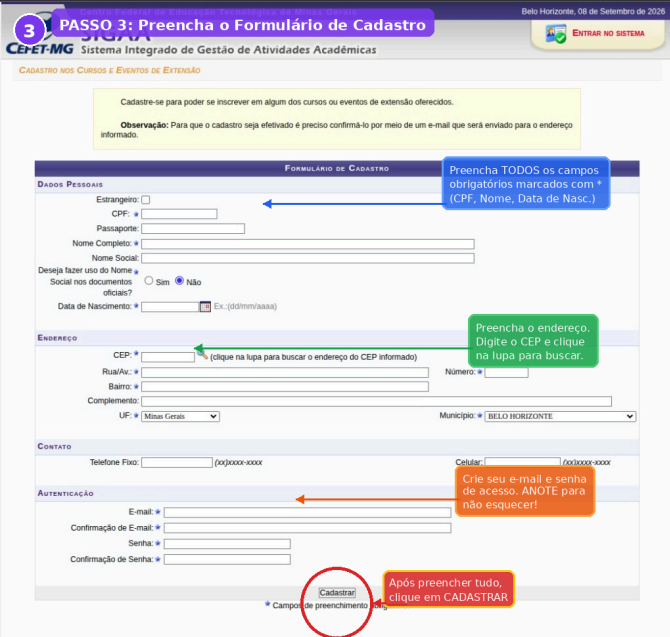
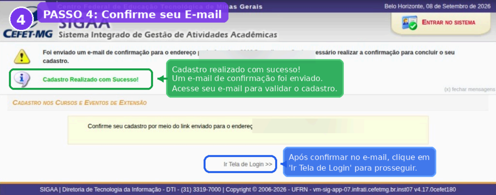
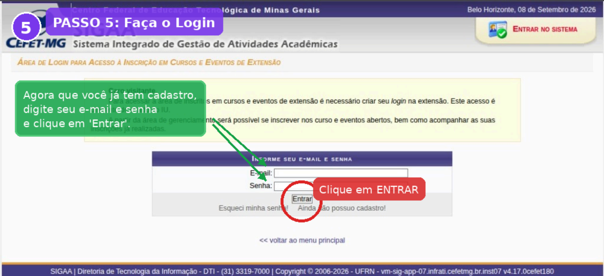
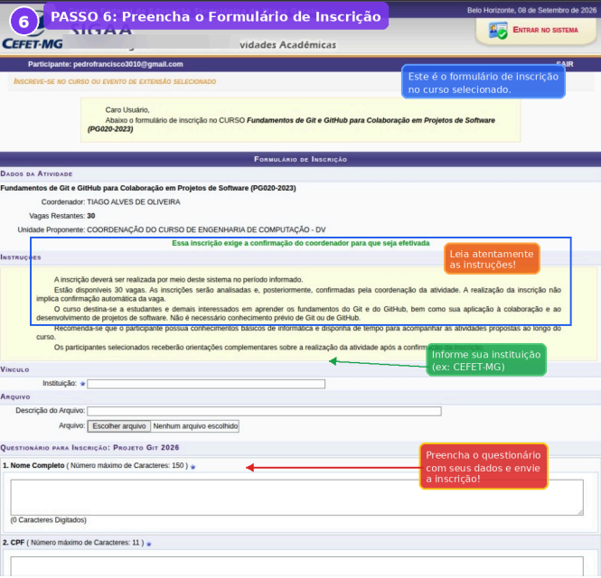

Controle de versão
Entenda como registrar alterações, acompanhar o histórico e trabalhar com segurança usando Git.
Projeto de extensão · CEFET-MG · 2026
Curso gratuito de extensão — Fundamentos de Git e GitHub para Colaboração em Projetos de Software — com atividades práticas e acompanhamento da equipe do CEFET-MG Campus Divinópolis.
Sobre o projeto
Uma formação introdutória para estudantes e interessados em tecnologia que desejam aprender a organizar versões de arquivos, trabalhar com repositórios e colaborar em projetos de software.
Entenda como registrar alterações, acompanhar o histórico e trabalhar com segurança usando Git.
Aprenda a publicar repositórios, sincronizar arquivos e utilizar a plataforma para colaboração.
Pratique branches, pull requests e fluxos básicos de colaboração usados em projetos reais.
Conteúdo do curso
O curso é organizado em quatro etapas progressivas, partindo dos fundamentos do Git até práticas de colaboração e integração com ferramentas de desenvolvimento.
Controle de versão, instalação e configuração, repositórios locais, commits, histórico e boas práticas.
Conta no GitHub, repositórios remotos, sincronização, branches e introdução a pull requests.
Uso do Git em editores de código, Visual Studio Code, GitHub Desktop e fluxos colaborativos.
Aplicação dos conteúdos em uma atividade guiada, revisão, esclarecimento de dúvidas e avaliação final.
Informações rápidas
Curso de extensão
Aulas síncronas
Para concluintes que atendam aos critérios do curso
Não exige experiência prévia
Voltado a estudantes do CEFET-MG e de outras instituições da região, alunos do ensino médio e técnico, graduandos e demais interessados em tecnologia e desenvolvimento de software.
Como se inscrever
A inscrição é feita pela área pública de cursos e eventos de extensão do SIGAA. Procure por Fundamentos de Git e GitHub para Colaboração em Projetos de Software (PG020-2023) e siga as etapas abaixo.
Abra a lista de cursos e eventos de extensão e procure por Fundamentos de Git e GitHub para Colaboração em Projetos de Software (PG020-2023). Clique no botão verde Inscrever-se ao lado do curso.
Abrir lista de inscrições
Ao clicar em Inscrever-se, você será levado à tela de login. Se ainda não tiver cadastro na Extensão, clique em “Ainda não possuo cadastro!”.

Preencha todos os campos obrigatórios, incluindo dados pessoais, endereço, e-mail e senha de acesso. Ao finalizar, clique em Cadastrar.

Após o cadastro, o SIGAA enviará uma mensagem de confirmação para o e-mail informado. Abra a mensagem, valide o cadastro pelo link recebido e depois volte à tela de login.

De volta à tela de acesso, informe o e-mail e a senha cadastrados e clique em Entrar. Você será direcionado para a área do participante.

Preencha o formulário do curso, informe sua instituição, leia as instruções, responda o questionário e envie a inscrição. Depois, aguarde a confirmação do coordenador.

Inscrições
Abra a lista de cursos e eventos de extensão, localize Fundamentos de Git e GitHub para Colaboração em Projetos de Software (PG020-2023) e clique no botão verde Inscrever-se.